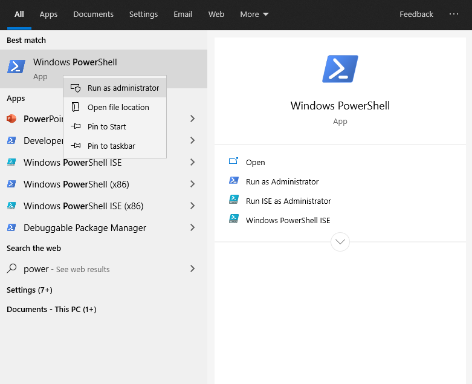

Software Environment
Visual Studio Code
The recommended code editor for this class is Microsoft Visual Studio Code (VSCode). It has nice plugins for syntax highlighting, code completion, and built in documentation for C, C++, and x64 assembly. Visit this link to download VSCode for your appropriate operating system. Most Windows and Linux users will want the 64-bit download. Please post on Discord if you are having any issues installing VSCode.
You may use another IDE if you would like, such as Atom or even emacs, but I will be assuming you're using VSCode in this class.
Recommended Plugins
You can search for plugins/extensions for VSCode by clicking on the following icon on the left of the VSCode Screen:

Below is a list of recommended plugins for this class that you should install
- ms-vscode.cpptools
- ms-vscode.cpptools-extension-pack
- ms-vscode.cpptools-themes
- twxs.cmake
- streetsidesoftware.code-spell-checker
- ehlkr.x86-64-assembly-pro
Quick Features Overview
Below are a few features I want to highlight that will come in handy as your working.
Unused variable highlighting
If you don't use a variable, it will show up in darker text. This is very useful when debugging. It means that either you didn't actually need the variable, you forgot to use it (hence you didn't complete your code), or you spelled it wrong somewhere. This saved many a student last year! (NOTE: The examples below are in Javascript, but the same applies to C/C++/assembly)

Replace within Selection
If you want to change the name of a variable in one section of your code, you can do a CTRL+F, which will bring up the find/replace menu, then follow these steps:

Windows Software Environment Instructions
Below are instructions to setup a linux-like development environment on Windows
Step 1: Install The Windows Subsystem for Linux
-
Open PowerShell as Administrator (Start menu > PowerShell > right-click > Run as Administrator)
and enter this command:
Then press
ENTER - Once the above has finished, restart your machine
-
Open the Microsoft Store and select Ubuntu 20.04 LTS

then select
Get
-
Wait for the installation to complete...

Step 2: Configure Your Development Environment
Now that the Windows Subsystem for Linux (WSL) has finished installing, we'll test it out and setup the software needed for this class
-
Launch WSL from the start menu

- Set your username and password
-
Before you go too much further, you may want to enable copying and pasting from the clipboard in WSL. Since
CTRL+Cmeans something special (kill a running process), copy actually happens withCTRL+SHIFT+C. Likewise, paste happens withCTRL+SHIFT+V. To enable these, right click on the top of the window and selectUse Ctrl+Shift+C/V as Copy/Pasteunder Options->Edit Options.

-
Back in the terminal, type
and hit
ENTER -
Next type
and hit
ENTER. This may take a moment
Now you should have everything you need to compile C/C++/assembly programs on your computer! There's just one more step needed to get graphical applications to work, which we will need for our pandemic simulation assignment
Step 3: Configure Graphical Applications
Here's how you can get graphical applications setup to run
- In the terminal, type
Then type
- Download and install vcXsrv at this link. This is a server for the X Window System that Linux uses.
-
Once you have installed vcXsrv, launch the program
XLaunchfrom the start menu. Select Multiple windows and clickNext >
-
Select "Start no client" and click
Next >
-
Disable Native opengl, and disable access control, then click
Next >
-
Click
Finish, and the server will be running in the background
Congratulations, you are now finished! You may proceed to homework 0 to test everything out.
NOTE: You will have to quickly repeat steps 3-6 every time you restart your computer, unless you save your configuration and add vcXsrv to your startup programs.
Mac OS Software Environment Instructions
Mac OS comes with considerably more support by default for Linux-like apps than Windows does, but there's still some work we'll have to do to get it ready for this class. Below are the steps:
- Open up the terminal, and type
and hit
ENTER. If you get something about an "inactive developer path," then follow these directions before proceeding. Be patient...they may take a moment. You should see something like this happening
-
If you do not already have brew, follow the directions to install it at https://brew.sh. You should see something like this during the process:

-
Execute the following command in the terminal
-
Execute the following command in the terminal
-
Execute the following command in the terminal
-
Execute the following command in the terminal
(this one may take a while) -
Execute the following command in the terminal
-
Execute the following command in the terminal
-
Execute the following command in the terminal
-
Execute the following two commands in the terminal
Congratulations, you are now finished! You may proceed to homework 0 to test everything out.